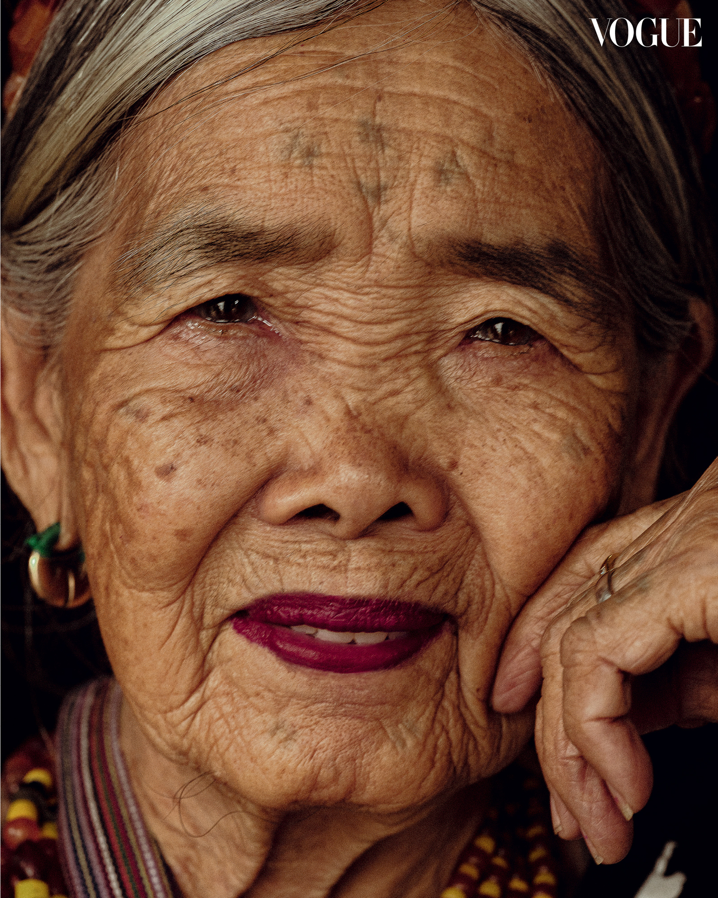
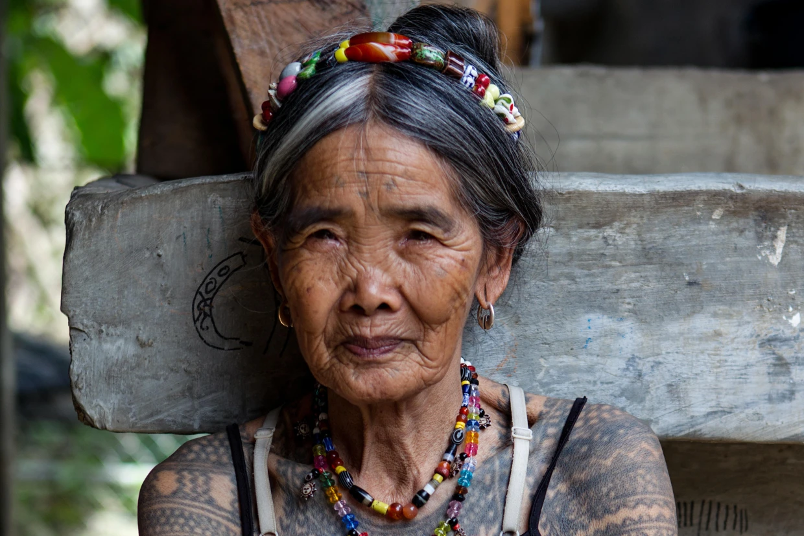

Whang-od Oggay | (Maria Oggay)
Personal life
When she was very young, Whang-od had a boyfriend named Ang-Batang, a Butbut warrior. She performed a batok on Ang-Batang after the warrior's first victory in a battle.[38] Many elders opposed her relations with Ang-Batang, believing the man's bloodline was not pure.[38] A marriage was eventually arranged for Ang-Batang and Whang-od's best friend Hogkajon.[38] Ang-Batang died as the result of a logging accident[22] when Whang-od was 25 years old.[25]
Grace Palicas, Whang-od's grandniece and senior apprentice, doing a facial tattoo and continuing the tradition of batok
She later decided never to marry and has no children,[10] leaving no direct descendants to continue her legacy as a mambabatok or traditional Kalinga tattoo artist. She had relationships with other Kalinga warriors, but remained unmarried due to her vow. According to tradition, her tattooing skills can only be inherited through lineage.[22] Whang-od believes that if someone outside the bloodline starts tattooing, the tattoos will become infected.[22] The influence of modernity meant that the young people of her village were no longer interested in embracing the tattooing works of their elders for decades, until a rise in appreciation of Indigenous ways in the 21st century paved the way for the conservation of the art form in Buscalan. Whang-od has trained Grace Palicas, her grandniece,[24] and Ilyang Wigan, another bloodline successor, to continue her people's tattoo artistry.[36] More bloodline successors have gradually become interested in their people's artforms, including a 12-year-old named Den Wigan.[39] However, these successors have not performed the other works of a mambabatok, and their own tattoos are not as intricate as those of Whang-od.[23] Furthermore, according to Filipino anthropologist Analyn Salvador-Amores, the other batok traditions, which include chanting and fortune-telling, and the revelation of the symbolic meanings of the tattoos, may fade away with Whang-od because these are not transferred to her successors.[23] Chanting and fortune-telling are only performed for the Kalinga people, never for people outside the ethnic sphere. With that, Whang-od may be the last mambabatok of her village, unless (1) the indigenous Kalinga peoples themselves formally choose to get traditional tattoos as part of their modern culture, and (2) her apprentices master the elaborate and highly difficult tattoo chanting arts before she passes away.[2
Read More
Legacy and cultural impact
Senator Nancy Binay stated that Whang-od's impact on Filipino culture has helped raise awareness and keep the knowledge, tradition and culture of Kalinga tattoos alive and known for the younger generations and people outside of Filipino culture.[40] The practice of Kalinga tattoos was almost extinct and the idea was obscure, "The tradition of Batok has changed with the modern times in the last millennia."[24] Whang-od's title as the "Last Kalinga Tattoo Artist" [41] will soon be inaccurate. It is said Whang-od is now teaching 20 young girls, plus her grandnieces the art of mambabatok so that the tradition and knowledge will not die with her and so that her legacy will be carried through her students and grandnieces.[42] Out of her twenty young students that she teaches, only Grace Palicas and Ilyang Wigan are considered her only real apprentices; due to tradition, the apprenticeship of batok must only be passed down and taught to blood relatives.[43] Whang-od's "signature" tattoo consists of three dots, representing herself and her blood-related apprentices and representing a next generation in her art.[44] These Kalinga tattoos, despite consisting of symbols occurring in nature carrying simple geometric patterns, do not carry the same meaning they had when they were earned through warfaring culture.[43]
Read More

Biography | Career
Whang-od started tattooing at the age of 15,[20] a traditional artform that she learned from her father who was considered a master tattooist in the region.[21] Traditionally, only men with special tattooing ancestry were allowed to learn the art. Whang-od was an exception due to her talent and potential seen by her father. In later life, Whang-od's chosen apprentices constituted of only women, breaking the patrimonial tradition for the first time in recorded Kalinga history. Despite breaking tradition, her community accepted her decision. She has been doing the batok, the traditional hand-tapped tattooing, on male headhunters who earned the tattoos by protecting villages or killing enemies.[22] She also tattoos women of the Butbut people in Buscalan, Kalinga, primarily for aesthetic purposes.[20][22] As a traditional Kalinga tattooist or mambabatok, she has done fortune telling and chants while doing tattoos.[23] Every design she creates contains symbolic meanings specific to the mambabatok culture.[23] For example, a warrior who had killed an enemy would be given an eagle tattoo upon his return from battle.[24]
She was first tattooed as a teenager[20] with the designs consisting of a ladder and a python.[25] The python tattoo was especially important in her people's sacred stories. According to their indigenous religion, the python scale tattoo was first given to Lagkunawa, a beautiful noblewoman from the village of Tinglayan (Whang-od's home village). It was a gift from the hero-god Banna, who fell in love with the mortal. Ever since, the tattoo was passed on through the generations.[26] Fatok is the term used for tattooing women to show beauty and wealth.[27] When a woman's arm is tattooed just like Whang-od's own tattoos, the family of the woman is obliged to pay the tattoo artist a piglet or a bundle of harvested rice (locally called as dalan).[27] On the other hand, fi-ing is the term used for tattooing of male Butbut warriors on their chests and arms.[27] Whang-od used to practice fi-ing until headhunting was discouraged by the government.[27] Fi-ing was last practiced in 1972.[27]
Though headhunters no longer exist, Whang-od still applies the tattoos on Buscalan tourists.[10] She however no longer chants when tattooing tourists, as the chants are only for the beautification of Kalinga women and for the celebration of Kalinga men's victory in battle.[23] Some of her notable customers include Rhian Ramos,[28] Drew Arellano,[29] Liza Diño[30] and Ice Seguerra.[31]
Read More